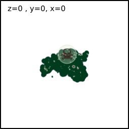
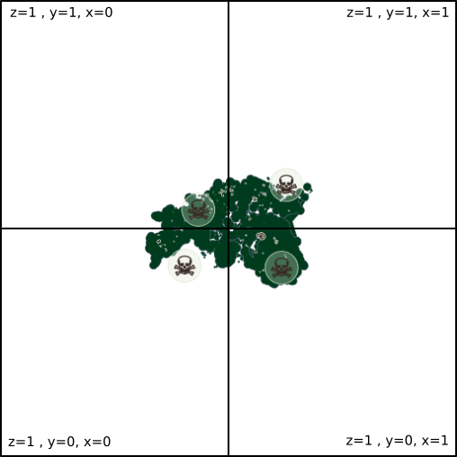
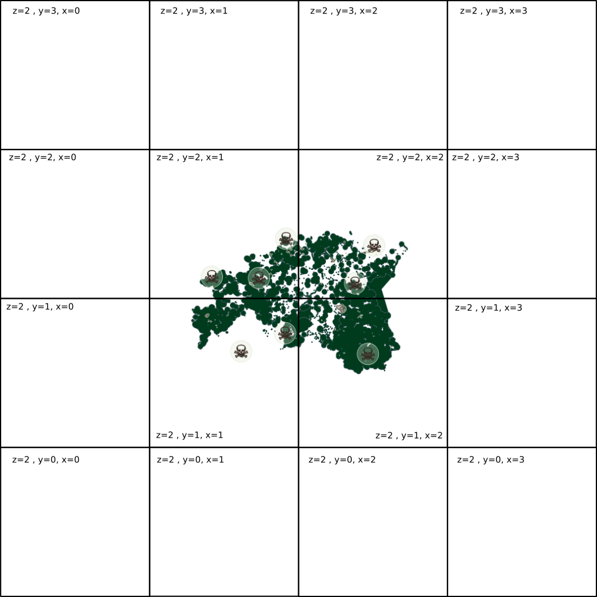

Keskkonnaandmed avalike veebiteenustena
(WMS, WFS, WCS, TMS)
st juba olemasolev tarkvara (klient) oskab suhelda (liidestuda)
(nt QGIS)
(nt Python, R, JavaScripti raamistikud, ...)
http://www.opengeospatial.org/standards
(kujundatud kaardipilt)
jpeg, png

(vektorandmed: ruumikujud, atribuudid)
geojson, gml
geojson, gml
(mitmedimensionaalsed arvumassiivid)
text, gml, tiff, netcdf
väikese kõrvalepõikena...
kaartide "kujundamine" tabelarvutusprogrammis
(kujundatud kaardipilt või vektorandmed kahheldatult)
png, geojson, topojson



gsavalik.envir.ee
(ehk miks, kellele ja milleks?)
(Keskkonnaagentuuri Ruumiandmete Teenus)
(Metsaregistri avalik portaal)
(Keskkonnaotsuste infosüsteemi avalik portaal)
Avaliku teabe seadus
("kõik" != reegel, kuid püüdleme selle poole)
andmete kasutamisel on atributsioon oluline! :)
https://github.com/e-gov/kem-gsavalik
aga sellel ei hakka hetkel siin pikemalt peatuma :)
(kuid pole kindel, kelle poole pöörduda)
https://github.com/okestonia/opendata-issue-tracker/issues
(ja näidispäringud)
https://github.com/e-gov/kem-gsavalik/blob/master/doc/layers.md
@tkardi
tonis.kardi@kemit.ee